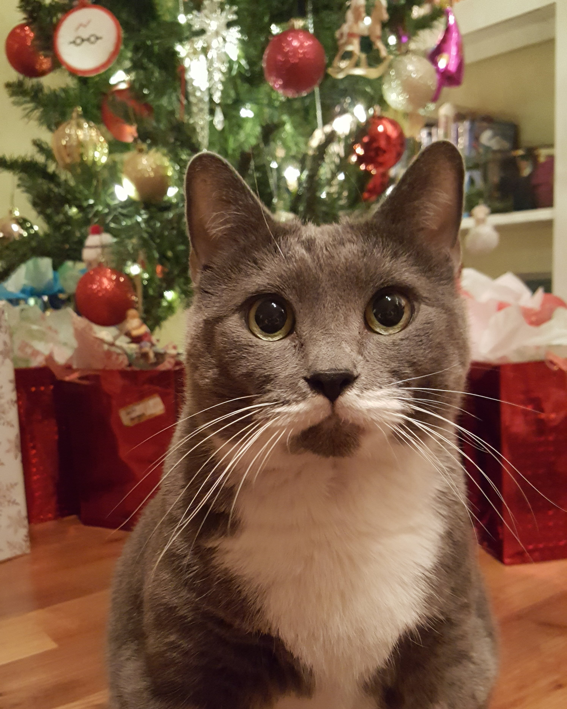
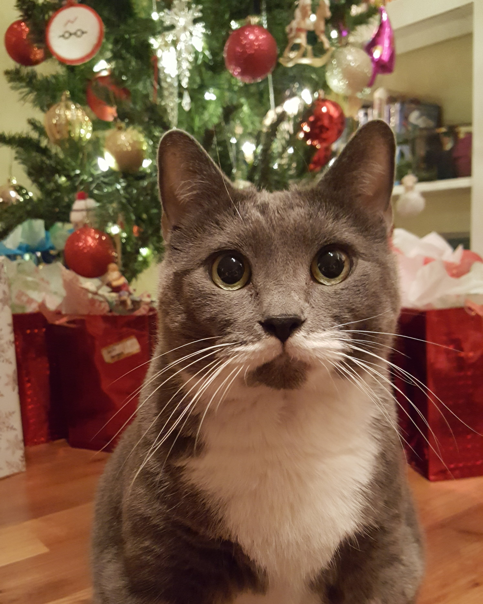

Hello, I'm Maggie Messer
FULL-STACK DEVELOPER in training
Portfolio
- A Night In
- - Summary: Interactive and responsive application that assists users by providing movie and dinner options to have a fun night in. Driven by 3rd-party APIs.
- - Role: Back end developer and Project Manager
- - Tools: HTML, CSS, JavaScript, jQuery, API, Materialize, GoogleFonts and GoogleFont Icons
- Paws and Whiskers
- - Summary: This application allows pet shelter owners to upload pets in need of homes and delete adopted pets, as well as allows prospective pet owners to view available pets in various filtered views. Application uses a Node.js and Express.js back end, uses both GET and POST routes for retrieving and adding new data, uses Handlebars.js as the template engine. Application is backed by a MySQL database with a Sequelize ORM and includes user authentication.
- - Role: Back end developer and Project Manager
- - Tools: JavaScript, CSS, HTML, SQL, MySQL2, Express, Node, Handlebars, Tailwinds, Bootstrap, Sequelize
- Tech Blog
- - Summary: A CMS-style blog site similar to a Wordpress site, where developers can publish their blog posts and comment on other developers’ posts as well.
- - Role: Sole author
- - Tools: JavaScript, Handlebars, MySQL2, Sequelize, bycrypt, Express, MVC structure, Bootstrap
About Me
I am an aspiring full-stack developer living in Orlando, Florida. One of my favorite places in Orlando, is Diagon Alley. I recently got married to my husband Kyle in the Orlando Science Center, surrounded by dinosaur skeletons. We have two furchildren: a derpy bagel pup (beagle + basset hound) named Mochi, and a grumpy cat named Thirteen Queen of Mean.
 

Resume
Objective
Full Stack Web Developer with background in project management and anthropology and a thirst for knowledge. Earned a certificate in Full Stack Web Development from the University of Central Florida Coding Boot Camp. Innovative problem-solver who is passionate about developing apps with a focus on mobile-first design and development. Strengths in timeline and scope management, teamwork, and building projects from ideation to execution.
Education
UCF Coding Bootcamp, 2022
Google Project Management Certificate, 2021
Florida State
University - B.S. Anthropology, 2010
Software
Visual Studio Code, Asana, Smartsheet, Google Suite, Microsoft Office Suite, SharePoint, Teams, Slack, Skype, Dropbox, Adobe, Mac, PC
Technical Skills
JavaScript ES6+, CSS3, HTML5, SQL, NoSQL, Git, GitHub, MongoDB, MySQL, Express, React, Node, Handlebars, jQuery, Bootstrap
Transferrable Skills
Written and Oral Communication, Detail-Oriented Organization, Customer Service, Planning, Budgeting, Analytical, Problem-Solving, Scope Management, Teamwork and Leadership
History
Currently employed at AssuredPartners since September 2021 as a Project Coordinator.
Currently serving as a Junior Project Manager on data conversion and scripts as well as overseeing an offshore
data team of 14.
My prior experience is in Homeowners insurance working as an office manager, claims
administrator, and claims examiner for six years on property and casualty claims for homeowners and renters
policies.
Contact Info
- LinkedIn: maggie-messer
- GitHub: magmesser
- Email: magmesser@gmail.com